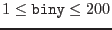
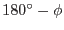

| Parameter | Mand | Type | Default | Constraints |
| eventtable | yes | table | | Name of existing EPIC event list |
The input event table which drives the boresight angle optimization.
It must contain sky image coordinates computed by attcalc; it is
likely to be the primary output event list from the chain processing
tasks emproc
or epproc.
|
| xcolumn | no | column | X | name of existing column in table
eventtable |
The name of the column in the input event table containing X-coordinates
of sky pixels (used to accumulate sky image with evselect)
|
| ycolumn | no | column | Y | name of existing column in table
eventtable |
The name of the column in the input event table containing Y-coordinates
of sky pixels (used to accumulate sky image with evselect)
|
| binx | no | integer | 50 |
|
size of sky image pixel bin in X-direction (used to accumulate
sky image with evselect) - please note: values less than 20
will lead to very large sky images and corresponding performance
degradations
|
| biny | no | integer | 50 |
 |
size of sky image pixel bin in Y-direction (used to accumulate
sky image with evselect) - please note: values less than 20
will lead to very large sky images and corresponding performance
degradations
|
| nruns | no | integer | 1 |
|
Duplicates corresponding parameter of task eboxdetect; controls
the source detection process; for more information please consult
description of task eboxdetect.
|
| likemin | no | real | 15 |
|
Duplicates corresponding parameter of task eboxdetect; controls
the source detection process; for more information please consult
description of task eboxdetect.
|
| sourceradius | no | real | .01 |
|
Radius in degrees of circle that will be drawn around each detected
source.
|
| runshowdetect | no | boolean | true | false true true |
Boolean switch determining whether or not to show the result of the
eboxdetect
run in each iteration.
|
| withrefsrclist | no | boolean | false | falsetrue |
Boolean parameter controlling the source reference input method.
When set to false the celestial coordinates of the reference
sources have to be typed in explicitly, otherwise they are taken
from the source list data set in refsrclist.
|
| refsrclist | no | data set | | name of existing source list |
If withrefsrclist is set to true the parameter
contains the name of an eboxdetect-compliant source list from
which the true celestial coordinates of the reference sources are to
be read. Actually, from all the columns in an eboxdetect
source list
only RA and DEC shall be used, i.e., the others can be
omitted. The source table row number is used as the source index starting
from 1.
|
| phi | no | real | |
|
Starting value of the boresight misalignment angle

(see Figure 1) in arcsecs.
|
| theta | no | real | |
|
Starting value of the boresight misalignment angle  (see Figure 1)
in arcsecs. (see Figure 1)
in arcsecs.
|
| psi | no | real | |
|
Starting value of the boresight misalignment angle (see Figure 1)
in degrees.
|
| tol1 | no | real | 1.e-1 |
 |
The parameter controls the stopping criterion for the stage-I minimization
as described above. The scheme stops if the fractional convergence tolerance
in the function value  is lower than the given value. Please note:
The default value is quite large because the stage-I minimization
is only intended to yield approximately correct value for is lower than the given value. Please note:
The default value is quite large because the stage-I minimization
is only intended to yield approximately correct value for  and
for a given fixed . and
for a given fixed .
|
| tol2 | no | real | 1.e-4 |
|
The parameter controls the stopping criterion for the stage-II minimization
as described above. The scheme stops if the fractional convergence tolerance
in the function value is lower than the given value. Please note:
This value is smaller than the corresponding one for stage I because
is determines the quality of the final set of angles.
|
| maxiter | no | integer | 1000 |
|
Maximum allowed number of iterations in stage I + stage II to find
a unique solution.
|
| Parameter | Mand | Type | Default | Constraints |